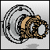

Cartoon

 Cartoon outlines the silhouette and boundary edges of your model.
-
The colors of the parts are flattened.
-
You control the Outline Color and Outline Width parameters.
-
The Cartoon style is the default.